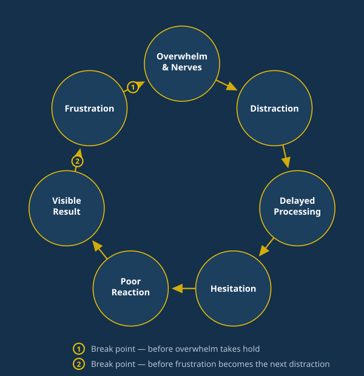

The players who quietly stop showing up at 14–16 aren't a discipline problem or a coaching problem. They're a pattern with a name — and a fix your committee can actually measure.

Every one of those quiet exits starts the same way — a player running this loop long enough, without a way to break it, that "not enjoying it" quietly becomes "not showing up." Overwhelm and nerves cause distraction. Distraction causes a delay in processing. That delay produces hesitation, a poor reaction, a result everyone can see — and the frustration that follows becomes the next distraction. One bad half becomes a bad season becomes a reason to quit.
Unbeatable interrupts it at the two points where it actually breaks — and builds that interruption into how your club already runs, not as a bolt-on programme that needs a room, a budget line, or a volunteer's evening.
Momentum, not motivation.
A completely free, anonymous read on where your club currently sits — before anyone commits to anything.
See the actual delivery, live, with no obligation attached.
Education, then application, then reinforcement — rehearsed in real training and matches, not a one-off talk that fades by Tuesday.
Communication, Attitude, Resilience, Effort — a measurable before-and-after you can actually bring to the AGM.
So it becomes part of how the whole club works, not one team's good season.
It needs no facility, no equipment, no build — it runs on how players think, talk and respond. The front door is free and takes ninety seconds.
Start with the free 90-second club snapshot — an anonymous, no-obligation read on where your club currently sits.
You'll get a link to the 90-second club snapshot — takes less than two minutes, no pressure.